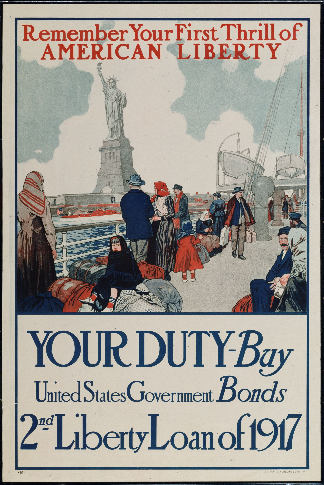

Poster Shack Library
United States WWI
Posters were widely used by US Administration to promote patriotism and allocate resourses such as money, food, metal, clothing
just a little bit playing with tables
| Russia | China | USA |
| before 1917 | pre- Mao | pre-WWII |
| post WWII posters |
In this period we'll see what was offered, food and bonds

Shanghai Propaganda Poster Art Center
Shanghai Propaganda Poster Art Center